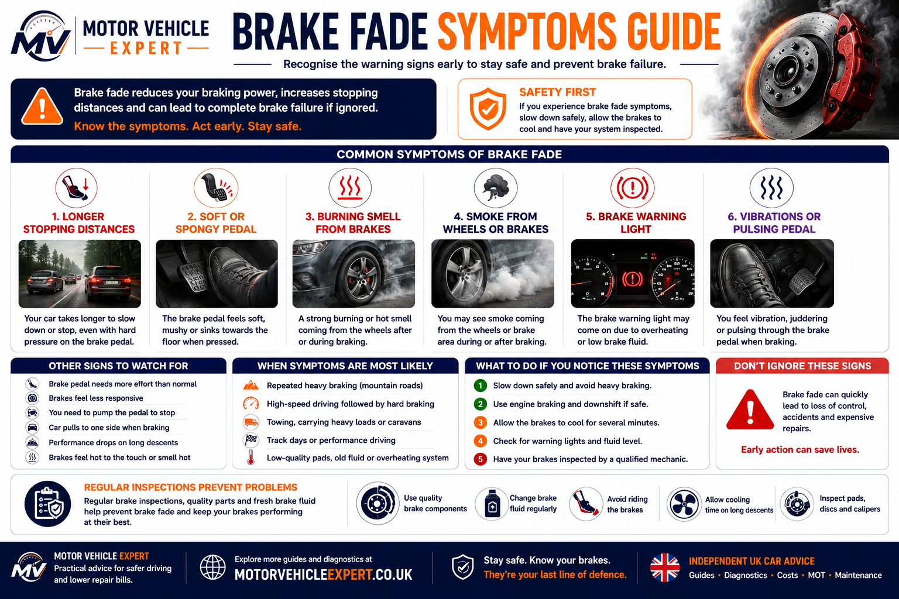
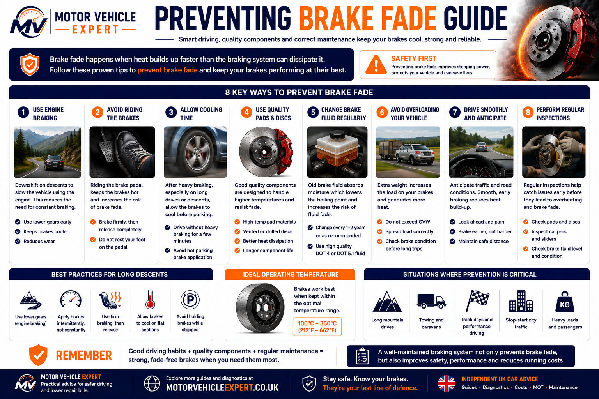

What Does Brake Overheating Mean?
Brake overheating means the brake pads, brake discs, calipers or brake fluid have become hotter than the system can safely manage. Brakes normally create heat every time you slow down, but overheating happens when that heat builds faster than it can escape.
Overheating brakes can cause a burning smell, smoke from the wheels, reduced braking performance, brake fade, a soft brake pedal, pulling to one side, damaged discs, glazed pads or seized calipers. If the problem is ignored, a small heat issue can quickly become an expensive brake repair.
Main Cause
Excessive heatHeat builds faster than the braking system can cool itself.
Common Warning Sign
Burning smellA hot, sharp smell after braking often means pads or discs are overheating.
Major Danger
Brake fadeOverheated brakes may lose stopping power when you need them most.
One Hot Wheel
Often caliper relatedOne wheel much hotter than the others often points to a dragging brake.
Can It Damage Parts?
YesPads, discs, calipers, brake fluid and seals can all be damaged by repeated overheating.
Best First Action
Cool then inspectAllow the brakes to cool safely, then identify why they overheated.
If the brakes are smoking, the pedal feels soft, the car pulls to one side or stopping power drops, do not continue normal driving. Stop safely, let the brakes cool and arrange inspection.
What Is Brake Overheating?
Every braking system creates heat. When the brake pads press against the brake discs, friction converts vehicle movement into heat energy. Under normal driving, that heat is released into the surrounding air through the brake disc, wheel and airflow around the vehicle.
Brake overheating begins when the brake system cannot remove heat quickly enough. This can happen because the driver is braking repeatedly, the vehicle is heavily loaded, the brake parts are worn, or one brake is dragging because of a mechanical or hydraulic fault.
Brake overheating is not always caused by aggressive driving. A seized caliper, stuck slide pin, collapsed hose or handbrake fault can make one brake overheat even during normal driving.
Brake Temperature Dashboard
Brake temperature changes depending on driving conditions, vehicle weight and brake condition. The exact temperature varies by vehicle, but the risk increases when brakes are used hard without enough cooling time.
Normal Town Driving
Short braking events with enough cooling time should not cause overheating on a healthy vehicle.
Motorway Braking
Occasional firm braking is normal, but repeated high-speed stops create much more heat.
Stop-Start Traffic
Frequent braking can build heat, especially if a caliper is already dragging.
Long Downhill Roads
Continuous braking on hills is one of the most common causes of overheated brakes.
Towing Or Heavy Loads
More weight means the braking system has to absorb much more heat.
Smoke Or Burning
Smoke or a strong burning smell means the brakes are operating at unsafe temperatures.
Brake Overheating Risk Dashboard
The seriousness depends on the symptoms. Mild heat after hard braking may be normal, but smoke, pulling, soft pedal feel or one extremely hot wheel should be treated as urgent.
Low
Warm brakes after normal driving with no smell, smoke or performance change.
Medium
Burning smell, repeated hot brakes or reduced brake bite after heavy use.
High
One wheel much hotter than the others, pulling, vibration or brake warning lights.
Critical
Smoke, soft pedal, fluid leak or sudden loss of stopping performance.
If the heat is coming from only one wheel, suspect a mechanical or hydraulic fault. If all brakes overheat after demanding driving, suspect load, technique, brake fluid or component heat capacity.
Normal Brake Heat Vs Dangerous Overheating
Brakes are designed to get hot, so heat by itself is not always a fault. The concern is when heat is excessive, uneven, repeated or accompanied by symptoms such as smell, smoke, pulling or reduced stopping power.
Normal Brake Heat
- ✓Brakes feel normal
- ✓No smoke
- ✓No strong burning smell
- ✓Both sides feel similar
- ✓Heat follows heavy braking
Dangerous Overheating
- ✓Smoke from wheel area
- ✓Strong burning smell
- ✓One wheel much hotter
- ✓Soft or long brake pedal
- ✓Vehicle pulls while driving or braking
A single overheating wheel is often more concerning than all four brakes being warm after hard driving, because it suggests one brake may be dragging continuously.
What Causes Brakes To Overheat?
Brake overheating usually happens for one of two reasons: either the brakes are being asked to absorb too much heat, or one part of the braking system is not releasing correctly. A professional diagnosis should always separate normal heat from a fault that creates constant friction.
The most serious overheating problems often come from one brake dragging continuously. This can happen because of a seized caliper, stuck slide pins, a collapsed brake hose, an electronic parking brake fault or incorrect fitting of pads and hardware.
Seized Brake Caliper
A sticking caliper keeps the pad pressed against the disc, creating constant heat even when the brake pedal is released.
Brake Calipers Explained →Sticking Slide Pins
If the caliper cannot slide freely, one pad may drag against the disc and cause local overheating.
Collapsed Brake Hose
A damaged hose can allow pressure into the caliper but restrict fluid return, leaving the brake partially applied.
Old Brake Fluid
Old brake fluid absorbs moisture and becomes more vulnerable to boiling when temperatures rise.
Brake Fluid Change Cost UK →Long Downhill Braking
Holding the brakes continuously on a descent prevents cooling and can overheat pads, discs and fluid.
Heavy Towing
More weight means more energy must be converted into heat every time the vehicle slows down.
Riding The Brakes
Keeping light pressure on the brake pedal for long periods creates unnecessary heat.
Cheap Brake Pads
Low-quality pads may overheat sooner and lose braking performance under repeated braking.
Brake Pads Explained →Incorrect Pad Fitting
Pads fitted too tightly, missing clips or poor lubrication can prevent free movement and cause overheating.
Electronic Parking Brake Fault
If the rear parking brake mechanism does not release fully, the rear brakes can overheat quickly.
Worn Brake Discs
Thin, scored or heavily worn discs can struggle to manage heat properly.
Brake Discs Explained →Performance Driving
Repeated high-speed braking can exceed the heat capacity of standard road pads, discs and fluid.
If only one wheel is overheating, do not assume it is caused by driving style. A single hot wheel usually points toward a dragging brake, seized caliper, restricted hose or parking brake fault.
Why Is One Wheel Getting Hotter Than The Others?
One wheel getting much hotter than the others is one of the strongest signs of a local brake fault. Normal driving usually warms brakes fairly evenly across the same axle. When one wheel becomes noticeably hotter, that brake may be dragging or failing to release.
Likely Cause
Dragging brakeThe brake pad may be staying in contact with the disc after the pedal is released.
Common Part
CaliperSeized pistons or slide pins are among the most common causes of one hot wheel.
Hydraulic Cause
Brake hoseAn internally restricted hose can keep pressure trapped at the caliper.
Rear Wheel Issue
Handbrake faultA sticking handbrake cable or electronic parking brake fault can overheat rear brakes.
Driver Symptom
Pulling or smellThe car may pull, feel held back or smell hot after a short drive.
Repair Risk
Pads + discsA dragging brake can quickly damage pads, discs, calipers and wheel bearings.
After a short road test, technicians often compare wheel temperatures carefully. A single wheel that is dramatically hotter than the others should be inspected before more parts are damaged.
Common Brake Overheating Symptoms
Overheating brakes rarely fail without warning. Long before braking performance becomes seriously affected, the braking system usually provides several clear signs that excessive heat is building. Some symptoms appear gradually while others develop very quickly if a brake becomes seized or begins dragging continuously.
Recognising these warning signs early allows drivers to stop safely, prevent further heat damage and avoid expensive repairs involving brake pads, brake discs, calipers, wheel bearings and hydraulic components.

A burning smell, smoke from the wheels, reduced braking performance or one wheel becoming significantly hotter than the others should always be investigated before normal driving continues.
Brake Overheating Symptom Dashboard
The following warning signs are the most common indicators that excessive brake temperatures are developing.
Burning Smell
A sharp burning smell is usually the earliest warning that brake pads or discs are becoming excessively hot.
Smoke From Wheel
Smoke indicates dangerously high temperatures and requires immediate cooling.
Hot Wheel
One wheel much hotter than the others usually points towards a dragging brake.
Longer Stopping Distance
Brake performance reduces as friction materials become overheated.
Brake Fade
Repeated overheating can eventually reduce braking efficiency.
Soft Brake Pedal
Boiling brake fluid may create vapour inside the hydraulic braking system.
Vehicle Pulls
One overheating brake often causes the vehicle to pull slightly during driving or braking.
Blue Brake Disc
Blue or purple colouring shows the brake disc has experienced extremely high temperatures.
Low
Warm brakes after heavy driving with normal braking performance.
Medium
Burning smell or repeated overheating after normal driving.
High
One hot wheel, brake fade or pulling while braking.
Critical
Smoke, soft pedal or severe loss of braking performance.
How Mechanics Diagnose Overheating Brakes
Professional diagnosis involves much more than simply replacing worn brake pads. A technician will inspect the entire braking system to identify why excessive heat developed, whether permanent damage has occurred and which components require repair or replacement.
Because overheating often affects several components at the same time, mechanics inspect the braking system as one complete hydraulic and mechanical assembly rather than treating each part individually.
The objective is to identify the source of the heat, determine how long the brakes have been overheating and confirm whether surrounding components have also been damaged.
Professional Brake Inspection Process
1. Road Test
The vehicle is driven carefully to reproduce burning smells, pulling, vibration, brake fade or unusual pedal feel.
2. Wheel Temperature
Each wheel is compared for abnormal temperature differences which may indicate a dragging brake.
3. Brake Pads
Pads are inspected for glazing, cracking, contamination, uneven wear and heat damage.
4. Brake Discs
Discs are checked for blue heat marks, scoring, cracks, distortion and minimum thickness.
5. Brake Calipers
Pistons, slide pins and mounting hardware are inspected to confirm the caliper moves freely.
6. Brake Fluid
Brake fluid condition, moisture contamination and boiling risk are assessed.
7. Brake Hoses
Flexible hoses are inspected for swelling, internal restriction, cracks and leakage.
8. ABS & Parking Brake
Electronic parking brake operation, ABS faults and warning lights are checked before repairs are recommended.
Common Workshop Findings
Evidence Of Overheating
- ✓Blue brake discs
- ✓Glazed brake pads
- ✓Burning friction material
- ✓Dark brake fluid
- ✓Smoke residue around the caliper
- ✓Uneven brake pad wear
Questions Every Garage Should Answer
- ✓Why did the brakes overheat?
- ✓Which component failed first?
- ✓Has the brake fluid been damaged?
- ✓Can any components be reused safely?
- ✓Will overheating happen again?
- ✓What repairs are recommended now?
Do not replace brake pads alone if the brakes have severely overheated. The underlying cause may be a seized caliper, sticking slide pins, contaminated brake fluid or a hydraulic fault. Correcting the source of the overheating is essential to prevent rapid wear and repeat failures.
What Damage Can Brake Overheating Cause?
Brake overheating rarely damages just one component. As temperatures continue to rise, heat spreads through the entire braking system. Brake pads, brake discs, calipers, hydraulic brake fluid, seals, wheel bearings and even tyres can all be affected if excessive temperatures continue for long periods.
In many cases the first visible symptom is a burning smell or smoke, but underneath the vehicle the braking system may already be suffering permanent wear. Identifying this damage early is far less expensive than replacing multiple components after repeated overheating.
A single seized caliper can quickly destroy brake pads, overheat the brake disc, boil brake fluid and eventually damage surrounding hydraulic seals if left unrepaired.
Brake Overheating Damage Dashboard
Brake Pads
Pads may glaze, crack, crumble or lose friction material after repeated overheating, reducing braking efficiency.
Brake Pads Explained →Brake Discs
Brake discs may develop blue heat marks, scoring, distortion or cracks if temperatures become excessive.
Brake Discs Explained →Brake Fluid
Moisture-contaminated brake fluid can boil, creating vapour that reduces hydraulic braking performance.
Brake Fluid Explained →Brake Calipers
Extreme temperatures can damage caliper seals, pistons and sliding mechanisms, increasing repair costs.
Brake Calipers Explained →Brake Hoses
Older flexible brake hoses may deteriorate faster when repeatedly exposed to excessive heat.
Wheel Bearings
A dragging brake can transfer heat into the hub assembly and shorten wheel bearing life.
ABS Components
Repeated overheating may affect ABS sensors and nearby electronic braking components.
Tyres
Extreme brake temperatures can increase heat around the wheel and tyre, especially during prolonged dragging.
Total Repair Costs
Ignoring brake overheating often turns a relatively simple repair into replacement of multiple braking components.
How Repair Costs Can Escalate
Repair costs usually increase in stages. Addressing overheating early may involve only servicing or replacing one component, while continued driving can damage much larger sections of the braking system.
Stage 1
Minor OverheatingBrake inspection, lubrication or brake fluid replacement may solve the problem before permanent damage occurs.
Stage 2
Component WearBrake pads, discs or calipers may require replacement once heat damage becomes visible.
Stage 3
Major RepairsIgnoring overheating can lead to multiple component replacement including discs, pads, calipers, brake fluid, hoses and bearings.
Brake overheating is often inexpensive to diagnose when caught early. Continuing to drive with overheated brakes usually increases both repair costs and safety risks because heat continues damaging surrounding components every time the vehicle is driven.
Brake Overheating Vs Brake Fade
Brake overheating and brake fade are closely related, but they are not the same thing. Brake overheating is the build-up of excessive heat inside the braking system. Brake fade is the loss of braking performance that can happen when that heat becomes too much for the pads, discs or brake fluid to handle.
Brake overheating is usually the cause. Brake fade is often the result. A brake can overheat before the driver notices any loss of stopping power, which is why early symptoms such as burning smells, smoke or one hot wheel should never be ignored.
Brake Overheating
Heat builds inside the braking systemThis happens when brake pads, discs, calipers or brake fluid become hotter than they can safely manage. The main concern is heat damage to braking components.
- ✓Burning brake smell
- ✓Smoke from wheel area
- ✓One wheel much hotter than others
- ✓Blue or discoloured brake discs
- ✓Hot caliper or dragging brake
Brake Fade
Braking performance reducesBrake fade happens when excessive heat makes the brakes less effective. The main concern is reduced stopping power when the driver needs the brakes most.
- ✓Longer stopping distance
- ✓Reduced initial brake bite
- ✓Soft or spongy brake pedal
- ✓Loss of braking confidence
- ✓Brakes improve after cooling
Brake Overheating And Brake Fade Comparison
Main Difference
Overheating describes excessive brake temperature. Brake fade describes the loss of braking performance caused by that heat.
First Warning Sign
Overheating often starts with smell, smoke or one hot wheel before braking performance noticeably drops.
Repair Priority
The cause of overheating must be fixed first, otherwise brake fade can return even after new pads or discs are fitted.
When Overheating Happens First
A seized caliper, dragging pad or repeated heavy braking causes heat to rise before the driver feels serious brake fade.
When Brake Fade Develops
As heat increases, pads lose friction and brake fluid may boil, reducing braking force and pedal confidence.
Best Repair Strategy
Find out why the brakes overheated before replacing parts. Otherwise the same heat problem may return.
Do not treat brake fade as a simple pad problem. If the brakes overheated because of a sticking caliper, restricted hose, old brake fluid or poor disc condition, replacing pads alone will not solve the root cause.
Read our full guide to Brake Fade Explained to understand how overheating affects stopping distance, pedal feel and brake performance.
Can You Drive With Overheating Brakes?
Whether it is safe to continue driving depends entirely on why the brakes are overheating and how severe the symptoms have become. Warm brakes after heavy braking are perfectly normal, but smoke, a strong burning smell, a soft brake pedal or one wheel becoming significantly hotter than the others should never be ignored.
Continuing to drive with overheated brakes increases the risk of brake fade, permanent damage to braking components and, in severe cases, a dangerous reduction in stopping performance. If you are unsure why the brakes have overheated, the safest decision is always to stop, allow the brakes to cool naturally and arrange inspection.
Mild Heat After Heavy Braking
Warm brakes after descending a hill or making several firm stops are normally expected. Allow the brakes to cool before continuing demanding driving.
Burning Smell
A burning smell often indicates overheating brake pads or a dragging brake. Avoid unnecessary driving until the cause has been identified.
One Hot Wheel
A single wheel that becomes much hotter than the others usually points towards a seized caliper, sticking slide pins or a hydraulic fault.
Smoke From Brakes
Smoke means brake temperatures have reached dangerous levels. Continuing to drive can cause severe damage and significantly reduce braking performance.
Soft Brake Pedal
A soft or spongy pedal may indicate overheated or boiling brake fluid. This should always be treated as a serious safety concern.
Reduced Braking Performance
If the vehicle takes longer to stop or braking effort feels inconsistent, arrange immediate inspection before further driving.
Driver Decision Dashboard
Safe To Continue
Brakes feel normal after cooling and there are no unusual smells, smoke or warning lights.
Book An Inspection
Repeated overheating, burning smells or unusually hot brakes should be checked as soon as possible.
Stop Driving Soon
One hot wheel, pulling under braking or visible heat damage requires prompt diagnosis.
Recover The Vehicle
Smoke, severe brake fade, fluid leaks or a soft brake pedal mean the vehicle should not continue normal driving.
Brakes are a safety-critical system. If you experience smoke, brake fade, boiling brake fluid, severe pulling or any sudden reduction in stopping power, stop safely and have the braking system professionally inspected before driving again.
Will Overheating Brakes Fail An MOT?
Brake overheating itself is not an MOT test item because the brakes are inspected under controlled conditions rather than after prolonged heavy use. However, the faults that cause overheating frequently result in MOT failures because they reduce braking efficiency, create brake imbalance or damage safety-critical components.
During the MOT inspection, the tester measures braking performance using roller brake equipment while also inspecting visible braking components, hydraulic parts and dashboard warning lights. If overheating has damaged the braking system, those defects are likely to be identified during the test.
A vehicle that has suffered repeated brake overheating should always be inspected before its next MOT. Waiting until the MOT often increases repair costs because overheating rarely affects just one component.
MOT Failure Risk Dashboard
Brake Efficiency
If overheating has reduced braking performance below legal standards, the vehicle can fail the roller brake test.
Brake Imbalance
A seized caliper or dragging brake often causes unequal braking force between wheels.
Brake Fluid Leak
Hydraulic leaks affecting braking performance are safety-critical MOT failures.
Brake Warning Light
Brake system or ABS warning lights may result in MOT failure depending on the fault.
Heat-Damaged Brake Discs
Cracked, heavily scored or excessively worn discs may not pass the inspection.
Dragging Brake
Binding brakes commonly cause imbalance, overheating and reduced braking efficiency.
If you have experienced burning brake smells, smoke, repeated overheating or brake fade, arrange repairs before presenting the vehicle for its MOT. This usually prevents repeat tests and additional labour costs.
Should You Repair Or Replace Overheated Brake Components?
Whether a brake component can be reused depends on how severely it has overheated. Some parts recover once temperatures return to normal, while others suffer permanent heat damage that reduces braking performance or reliability. A professional inspection should determine which components remain safe and which require replacement.
Repair Decision Dashboard
Brake Pads
Glazed, cracked or contaminated pads normally require replacement because friction performance is permanently reduced.
Brake Pad Replacement Cost UK →Brake Discs
Blue heat marks, cracking, severe scoring or distortion usually mean replacement is the safest option.
Brake Disc Replacement Cost UK →Brake Fluid
Brake fluid that has boiled or become moisture contaminated should normally be replaced rather than reused.
Brake Fluid Change Cost UK →Brake Caliper
Binding pistons, seized slide pins or damaged seals should be repaired before fitting new pads or discs.
Brake Caliper Replacement Cost UK →Brake Hose
Collapsed or damaged brake hoses should always be replaced rather than repaired.
Wheel Bearings
If overheating has been severe or prolonged, nearby wheel bearings should also be inspected for heat damage.
Repair Cost Progression
Early Diagnosis
Lowest CostFinding the cause of overheating early often prevents expensive secondary damage.
Delayed Repairs
Moderate CostIgnoring overheating usually means replacing several braking components rather than one.
Repeated Overheating
Highest CostMultiple overheating events can require pads, discs, calipers, brake fluid and hydraulic repairs together.
Replacing brake pads without identifying why the brakes overheated is rarely the correct repair. Always diagnose the original source of excessive heat before fitting new components.
How To Prevent Brake Overheating
Brake overheating is usually preventable. While demanding driving conditions naturally generate heat, a well-maintained braking system combined with good driving technique allows that heat to dissipate safely before it damages brake components. Preventative maintenance is almost always cheaper than repairing the damage caused by repeated overheating.
Most overheating problems result from one of three areas: poor driving technique, neglected maintenance or mechanical faults such as sticking calipers and worn braking components. Addressing these issues early helps maintain braking performance, extends component life and improves overall vehicle safety.

Regular brake servicing, quality replacement components and correct driving habits significantly reduce the risk of overheating, brake fade and unnecessary wear.
Brake Overheating Prevention Dashboard
Use Engine Braking
Select a lower gear on long descents so the engine helps slow the vehicle instead of relying entirely on the brakes.
Avoid Riding The Brakes
Continuous light braking generates far more heat than short, controlled braking applications.
Replace Brake Fluid
Fresh brake fluid maintains a higher boiling point and helps prevent hydraulic brake fade.
Brake Fluid Change Cost UK →Inspect Brake Pads
Replace worn or glazed pads before they lose friction and begin overheating more easily.
Brake Pads Explained →Service Brake Calipers
Clean, lubricate and inspect caliper slide pins to ensure the brakes release correctly after every stop.
Brake Calipers Explained →Inspect Brake Discs
Healthy brake discs dissipate heat more effectively than heavily worn or damaged discs.
Brake Discs Explained →Reduce Vehicle Load
Heavy loads require much more braking energy, increasing brake temperatures during every stop.
Allow Cooling Time
After repeated heavy braking, allow the braking system to cool naturally before demanding further performance.
Choose Quality Parts
Good quality brake pads, discs and brake fluid generally provide better heat resistance and longer service life.
Driving Situations That Increase Brake Temperatures
Mountain Roads
Use engine braking wherever possible and avoid continuous pedal pressure on long descents.
Towing
Increase braking distances and ensure the braking system is serviced before towing heavy trailers.
Track Driving
Standard road braking systems are rarely designed for repeated high-speed braking without additional cooling.
Urban Driving
Frequent stop-start traffic generates more heat than constant motorway cruising.
Emergency Braking
Occasional emergency stops are expected, but repeated heavy braking without cooling increases temperatures rapidly.
Daily Maintenance
Regular inspections of pads, discs, calipers and brake fluid are the most effective long-term prevention strategy.
Preventing brake overheating is almost always less expensive than repairing the damage it causes. Combining good driving technique with regular brake servicing is the most effective way to maintain braking performance and avoid costly repairs.
How To Check For Brake Overheating When Buying A Used Car
Brake overheating rarely leaves just one clue. Even if the vehicle drives normally during a short test drive, previous overheating often leaves visible evidence on the brake discs, brake pads, calipers and service history. Spending a few extra minutes inspecting the braking system can help you avoid expensive repairs after purchase.
A well-maintained braking system should operate quietly, stop the vehicle smoothly and show no signs of excessive heat damage. If you notice burning smells, blue brake discs or uneven braking performance, investigate further before agreeing to buy.
Always inspect the braking system when the vehicle is cold if possible. Freshly driven vehicles may hide dragging brakes because every wheel will already feel warm.
Used Car Inspection Dashboard
Brake Service History
Look for evidence of regular brake fluid replacement together with brake pad and brake disc servicing.
Brake Discs
Check for blue heat marks, heavy scoring, cracking, corrosion and uneven wear across both sides of each disc.
Brake Pads
Pads should wear evenly. One pad significantly thinner than the other may indicate a sticking caliper.
Brake Calipers
Inspect calipers for fluid leaks, damaged dust boots, corrosion or obvious signs of overheating.
Brake Fluid
Very dark brake fluid often suggests servicing has been neglected.
Burning Smell
A hot burning smell after a normal test drive should never be dismissed as "just hot brakes."
Road Test
The vehicle should brake in a straight line without vibration, pulling or unusual noises.
Wheel Temperature
After a short drive, one wheel that is dramatically hotter than the others usually indicates a dragging brake.
Garage Inspection
An independent pre-purchase inspection can identify brake faults that are difficult to spot during a brief viewing.
Buyer Decision Dashboard
Buy With Confidence
Complete service history, smooth braking and no signs of overheating or uneven brake wear.
Negotiate The Price
Minor brake servicing may be required if pads, discs or brake fluid are approaching replacement.
Walk Away
Repeated overheating, seized brakes, smoke, severe heat damage or poor maintenance history can quickly become expensive.
Do not judge the braking system solely by the appearance of new brake pads. Fresh pads fitted to overheated discs or sticking calipers do not solve the underlying problem. Always look for evidence of complete brake maintenance rather than isolated parts replacement.
Common Mistakes That Lead To Brake Overheating
Many overheating problems are avoidable. Good driving habits and regular brake maintenance significantly reduce heat build-up, improve braking performance and extend the life of expensive brake components.
Riding The Brakes
Continuous light braking creates constant friction and unnecessary heat.
Ignoring Brake Fluid
Old brake fluid has a lower boiling point and increases the risk of brake fade.
Ignoring Burning Smells
A burning smell is often the first indication that a brake is overheating.
Cheap Brake Parts
Low-quality friction materials generally cope with heat less effectively.
Skipping Brake Servicing
Regular servicing identifies sticking calipers and worn components before overheating develops.
Ignoring One Hot Wheel
One hot wheel almost always deserves investigation before further driving.
Most brake overheating faults begin as relatively small maintenance issues. Early diagnosis usually costs far less than replacing multiple damaged braking components later.
Explore More Braking Guides
Brake overheating is connected to almost every part of the braking system. Continue through these live Motor Vehicle Expert guides to understand the full system, common faults and realistic repair decisions.
Disc Brakes Explained
Learn how disc brakes create stopping force and manage heat.
Brake Fade Explained
Understand how overheating reduces braking performance.
Hydraulic Braking System Explained
See how pedal force becomes hydraulic braking pressure.
Brake Pads Explained
Understand pad wear, glazing, friction and overheating.
Brake Discs Explained
Learn how discs absorb heat and when they need replacement.
Brake Calipers Explained
Find out how sticking calipers cause dragging brakes.
Brake Fluid Explained
Understand boiling point, moisture and hydraulic brake fade.
Brake Pipe Explained
Learn how brake pipes carry hydraulic pressure safely.
Brake Fluid Change Cost UK
Compare brake fluid service prices and intervals.
Brake Pad Replacement Cost UK
Understand typical UK brake pad replacement costs.
Brake Disc Replacement Cost UK
Learn brake disc replacement costs and quote factors.
Brake Caliper Replacement Cost UK
See what caliper repairs and replacements usually cost.
Brake Overheating Explained FAQs
Why do brakes overheat?
Brakes overheat when they create more heat than they can release. Common causes include repeated heavy braking, towing, long downhill driving, seized calipers, sticking slide pins, old brake fluid and dragging brakes.
Is brake overheating dangerous?
Yes. Overheating can reduce stopping power, cause brake fade, damage pads and discs, boil brake fluid and increase repair costs.
Can one brake overheat?
Yes. One hot wheel often points to a seized caliper, stuck slide pin, collapsed brake hose, handbrake fault or incorrectly fitted brake pads.
Why do my brakes smell like burning?
A burning brake smell usually means pads, discs or calipers are getting too hot. It should be inspected if it happens during normal driving.
Why are my brakes smoking?
Smoke from the brakes means temperatures are extremely high. Stop safely, let the brakes cool and arrange inspection before continuing normal driving.
Can overheating cause brake fade?
Yes. Brake fade is often the result of overheating, where pads, discs or brake fluid lose performance because temperatures are too high.
Can overheated brakes warp discs?
Severe heat can damage discs, cause distortion, cracking, scoring or thickness variation. A garage should inspect the discs before reuse.
Can old brake fluid cause overheating?
Old brake fluid does not usually create heat by itself, but it is more likely to boil when brakes overheat, causing a soft pedal and reduced braking performance.
Can I drive after my brakes overheat?
Only if the brakes cool down and feel completely normal. If there is smoke, a soft pedal, pulling, warning lights or one hot wheel, arrange inspection first.
Will overheating brakes fail an MOT?
Overheating itself may not be present during the MOT, but binding brakes, poor efficiency, imbalance, leaks, warning lights or damaged discs can fail.
How long do brakes take to cool down?
Cooling time depends on the severity of overheating, vehicle weight and airflow. Severe overheating should not be treated as solved just because the brakes cool down.
How do you prevent brake overheating?
Use engine braking on descents, avoid riding the brakes, service calipers, replace old brake fluid, fit quality pads and discs and inspect faults early.
About This Brake Overheating Guide
This guide was created to help UK drivers understand why brakes overheat, how to recognise dangerous heat symptoms and what action to take before expensive brake damage occurs.
It explains burning brake smells, smoke from wheels, one hot wheel, seized calipers, dragging brakes, brake fade, MOT implications, repair decisions and prevention using a practical workshop-style structure.
UK Focused
Written around UK driving conditions, MOT concerns and realistic repair decisions.
Workshop Approach
Built around how overheating brake faults are inspected and diagnosed professionally.
Driver First
Designed to help motorists recognise risk, avoid damage and ask better garage questions.
How This Brake Overheating Guide Was Written
Motor Vehicle Expert braking guides are written to explain safety-critical vehicle systems clearly while staying practical for everyday UK drivers. The aim is to combine mechanical understanding with real-world inspection and repair guidance.
Guide Principles
- ✓Brake safety first
- ✓Workshop-style diagnosis
- ✓UK MOT relevance
- ✓Practical ownership advice
Topics Covered
- ✓Overheating causes
- ✓Symptoms and warning signs
- ✓Repair and prevention decisions
- ✓Used car buying checks
This guide is educational and intended to help drivers understand overheating brake symptoms. It does not replace inspection by a qualified technician.
Important Brake Safety Disclaimer
Brake overheating can affect stopping performance and should always be treated seriously. This guide is for educational purposes only and should not be used as a substitute for professional brake inspection, diagnosis or repair.
If your vehicle has smoke from the brakes, a strong burning smell, one hot wheel, pulling, brake warning lights, a soft pedal or reduced stopping performance, arrange inspection before relying on the vehicle.
Never continue normal driving with a confirmed hydraulic fault, severe brake overheating, brake fluid leak, smoke from the wheels or sudden loss of braking performance.